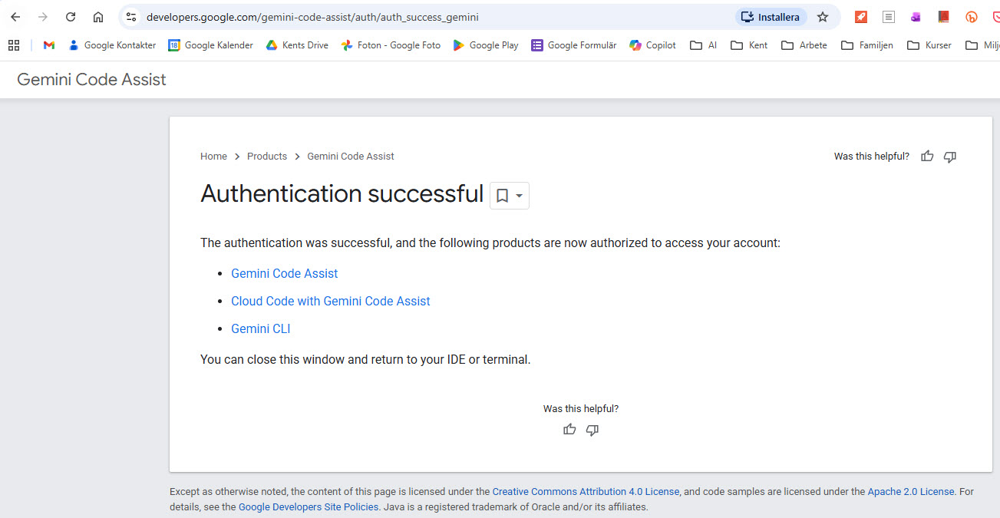
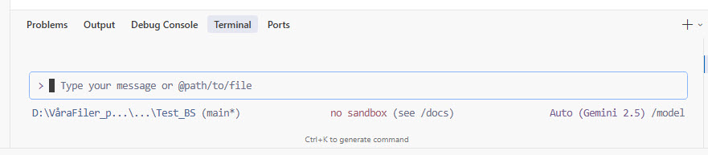
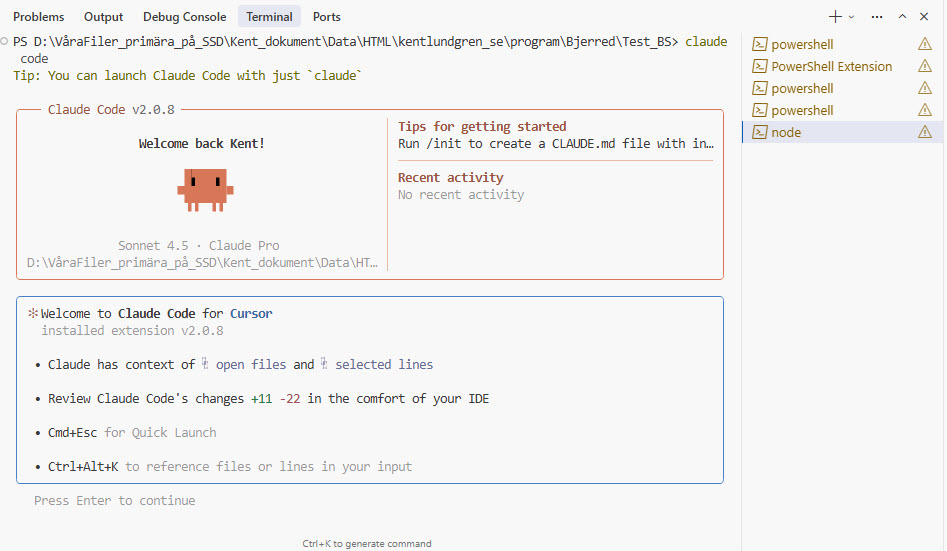

Gemini CLI fungerar INTE som dokumenterat via gcloud kommandoradsverktyg.
Detta dokument bevaras som referens och visar:
• Vad som försöktes
• Vilka steg som togs
• Varför det inte fungerade
• Vad du bör använda istället (Claude Code)
Det fungerar, är enkelt att installera och har utmärkt dokumentation.
Vad är (skulle vara) Gemini CLI?
Gemini CLI (Command Line Interface) skulle vara ett kraftfullt verktyg från Google som låter dig
interagera med Gemini AI direkt från terminalen i Cursor eller andra utvecklingsmiljöer.
Teoretiska fördelar (om det hade fungerat):
✨ Snabb tillgång till AI-assistans direkt i terminalen
💻 Kodgenerering och kodförklaring
🔍 Felsökning och problemlösning
📝 Dokumentation och skriptautomatisering
🌐 Integrerad med Google Cloud
❌ VERKLIGHET: Inget av detta fungerade via gcloud CLI
Skapad: 6 januari 2026 Slutförd: 6 januari 2026 Status:MISSLYCKADES Syfte: Dokumentation av försöket att installera Gemini CLI och varför det inte fungerade Resultat: Google Cloud SDK installerat och konfigurerat, men Gemini CLI existerar inte som gcloud-kommando
📋 Förutsättningar
⚠️ VIKTIGT - Läs Detta Först!
Om du får felet "gcloud is not recognized",
betyder det att du INTE har installerat Google Cloud CLI ännu.
Detta är det första du måste göra!
✅ Vad du behöver innan du börjar:
✅ Google Cloud Account - Du måste ha ett Google-konto (gratis att skapa)
✅ Google Cloud CLI (gcloud) installerat - Detta är det VIKTIGASTE! Utan detta fungerar ingenting!
✅ Gemini API-åtkomst aktiverad i ditt Google Cloud-projekt
✅ Cursor IDE eller annan terminal-applikation
🎯 Kontrollera om du har gcloud installerat:
# Kör detta i PowerShell:
gcloud --version
# Om installerat, ser du version-info # Om INTE installerat: "gcloud is not recognized"
Om du får felmeddelande → Gå direkt till Steg 1 nedan för att installera!
🔧 Steg-för-Steg: Komma igång med Gemini CLI
1 Installera Google Cloud CLI
Om du inte redan har Google Cloud CLI installerat:
Windows (PowerShell):
# Ladda ner och installera Google Cloud CLI
# Besök: https://cloud.google.com/sdk/docs/install
# Efter installation, verifiera:
gcloud --version
Mac/Linux:
# Installera med curl
curl https://sdk.cloud.google.com | bash
# Starta om terminalen och verifiera:
gcloud --version
2 Autentisera med Google Cloud
Första gången du använder Gemini CLI måste du autentisera dig:
# Starta autentiseringsprocessen
gcloud auth login
# För att använda Gemini specifikt:
gcloud auth application-default login
Vad händer nu?
En webbläsare öppnas automatiskt
Du loggar in med ditt Google-konto
Du godkänner behörigheter för Gemini Code Assist, Cloud Code och Gemini CLI
Du ser en bekräftelsesida

✅ Autentiseringen lyckades! När du ser denna sida är följande produkter auktoriserade:
Gemini Code Assist, Cloud Code with Gemini Code Assist, och Gemini CLI.
Obs: Det finns ofta en gratis tier/provperiod, men kreditkort krävs ändå.
C. Verifiera Konfiguration
# Kontrollera aktivt projekt
gcloud config get-value project
# Kontrollera inloggat konto
gcloud auth list
# Lista aktiverade API:er
gcloud services list --enabled
4 Testa Gemini CLI
Nu när allt är konfigurerat, testa Gemini:
# Enkel test-prompt
gcloud ai generative-ai models generate-content --model=gemini-pro --prompt="Hej, vad är 2+2?"
Alternativ kommandosyntax (beroende på version):
# Äldre syntax (kan vara deprecated)
gcloud ai gemini chat
💡 Kommandosyntax kan variera!
Google uppdaterar ofta sina CLI-kommandon. Om gcloud ai gemini inte fungerar, prova:
gcloud ai generative-ai models generate-content
gcloud alpha ai (alpha/beta-versioner)
Kör gcloud ai --help för att se tillgängliga kommandon

🎉 Gemini CLI är igång! När du ser Gemini-prompten i terminalen är du redo att börja använda AI-assistans.
4 Verifiera att Allt Fungerar
✅ Checklist - Så här ser du att allt är klart:
☑️ Autentiseringssidan visades - Du såg "Authentication successful" i webbläsaren
☑️ Terminalen visar Gemini-prompt - Du ser en prompt där du kan skriva frågor
☑️ Inga felmeddelanden - Inga "authentication failed" eller "permission denied" errors
☑️ Du kan skriva kommandon - Prompten accepterar inmatning
🎯 Perfekt! Du är nu redo att använda Gemini CLI!
🎮 Hur man Använder Gemini CLI i Cursor
Två Sätt att Köra Gemini CLI - VIKTIGT ATT FÖRSTÅ!
Metod 1: Interactive Mode (Bra för korta frågor) 💬
# Öppna en interaktiv chat-session med Gemini
gcloud ai gemini chat
# Du får en prompt där du kan skriva dina frågor: Gemini> _
⚠️ Problem med Interactive Mode:
❌ Input-rutan är bara EN RAD - svårt att se långa prompts
❌ Opraktiskt för långa prompts som Prompt 3
❌ Svårt att redigera om du gjort fel
✅ Bra för korta frågor och snabb testning
Metod 2: Direct Mode (REKOMMENDERAS för långa prompts!) ⚡
# Ställ en direkt fråga och få svar
gcloud ai gemini generate "Din fråga här"
# Spara svaret direkt till fil (BÄST!)
gcloud ai gemini generate "Din fråga här" > output.html
✅ Fördelar med Direct Mode:
✅ Hela kommandot på en rad - enklare att hantera
✅ Lätt att spara output direkt till fil
✅ Kan använda textfiler för prompts
✅ Perfekt för långa prompts
Metod 3: Använd Prompt-fil (SMARTAST för långa prompts!) 📄
För långa prompts som Prompt 3, spara prompten i en textfil först:
# Skapa en textfil med din prompt (prompt3.txt) # Sedan kör:
gcloud ai gemini generate "$(Get-Content prompt3.txt -Raw)" > git_merge_rebase.html
💡 Vilken metod ska du välja?
Korta frågor: Interactive Mode (gcloud ai gemini chat)
Långa prompts: Direct Mode med fil (generate "$(Get-Content fil.txt -Raw)")
Spara resultat: Alltid använd > filnamn.html i slutet
Avsluta Gemini CLI
# För att avsluta interactive session:
exit
# Eller tryck:
Ctrl+C
⚠️ RÄTT vs FEL - Lär dig skillnaden!
❌ FEL Sätt (Fungerar INTE!)
Fel 1: Glömma kommandot helt
berätta om Frans G Bengtsson
Resultat:The term 'berätta' is not recognized...
Problem: PowerShell försöker köra "berätta" som ett kommando!
Fel 2: Använd Interactive Mode för långa prompts
gcloud ai gemini chat Gemini> [Klistra in jättelång prompt här] ← Bara en rad input!
Problem: Opraktiskt - du ser bara en rad!
Fel 3: Inkludera output-omdirigering i prompten
gcloud ai gemini generate "Förklara Git > output.html"
Problem:> output.html är inte del av prompten!
✅ RÄTT Sätt (Fungerar!)
Rätt 1: Kort prompt direkt i terminalen
gcloud ai gemini generate "berätta om Frans G Bengtsson"
Resultat: Svar visas direkt i terminalen
Rätt 2: Kort prompt med output till fil
gcloud ai gemini generate "berätta om Frans G Bengtsson" > frans.txt
Resultat: Svar sparas i frans.txt
Rätt 3: Lång prompt från fil
gcloud ai gemini generate "$(Get-Content prompt3.txt -Raw)" > output.html
Resultat: Perfekt för långa prompts!
Rätt 4: Interactive mode för korta frågor
gcloud ai gemini chat Gemini> Vad är Python? Gemini> Förklara listor i Python Gemini> exit
Resultat: Bra för snabba, korta frågor!
🎯 Snabbguide - När ska jag använda vad?
Situation
Använd Denna Metod
Exempel
Kort fråga, vill se svar direkt
gcloud ai gemini generate "prompt"
"Vad är recursion?"
Kort fråga, vill spara svar
gcloud ai gemini generate "prompt" > fil.txt
"Förklara async/await" → async.txt
Lång prompt, vill ha HTML-dokument
generate "$(Get-Content fil.txt -Raw)" > out.html
Prompt 3 → git_merge_rebase.html
Flera korta frågor i följd
gcloud ai gemini chat (Interactive)
Fråga, svar, fråga, svar...
💡 Användbara Kommandon
Kommando
Beskrivning
gcloud ai gemini chat
Startar interaktiv chat-session
gcloud ai gemini generate "prompt"
Genererar svar på en specifik prompt
gcloud ai models list
Listar tillgängliga AI-modeller
gcloud config list
Visar din nuvarande konfiguration
gcloud auth list
Visar auktoriserade konton
gcloud help
Visar hjälp och dokumentation
🎯 Tre Exempel-Prompter att Testa
⚠️ VIKTIGT: Förstå Skillnaden!
PowerShell-kommando (hela raden):
gcloud ai gemini generate "DIN PROMPT HÄR" > output.html
🔴 Röd del = Din prompt (frågan till Gemini)
🟠 Orange del = PowerShell-omdirigering (spara till fil)
⚪ Vit text = PowerShell-kommando
Prompten innehåller ALDRIG> filnamn.html - det är PowerShell-syntax!
Här är tre olika exempel som visar vad du kan göra med Gemini CLI:
📝 Prompt 1: Kodgenerering (Python Script)
Använd när: Du vill skapa ny kod från grunden
Prompt:
Skapa ett Python-script som läser en CSV-fil med försäljningsdata (kolumner: datum, produkt, antal, pris) och genererar en rapport med totala intäkter per produkt. Inkludera felhantering för saknade filer och visualisera resultatet med matplotlib.
Detta visar:
✅ Kodgenerering från beskrivning
✅ Kompletta, fungerande script
✅ Best practices (felhantering, dokumentation)
✅ Integration med bibliotek (pandas, matplotlib)
🔍 Prompt 2: Kodgranskning och Förbättring
Använd när: Du vill förbättra eller debugga befintlig kod
Prompt:
Granska följande JavaScript-funktion och föreslå förbättringar för prestanda, läsbarhet och säkerhet:
function processUsers(users) {
var result = [];
for (var i = 0; i < users.length; i++) {
if (users[i].age > 18) {
result.push(users[i].name);
}
}
return result;
}
Förklara varje förbättring du föreslår.
Detta visar:
✅ Kodgranskning och analys
✅ Modernisering av kod (ES6+)
✅ Prestandaoptimering
✅ Detaljerade förklaringar
📚 Prompt 3: Konceptförklaring som HTML-Dokument
Använd när: Du vill lära dig något nytt och få det som ett HTML-dokument att spara
Prompt (Uppdaterad för HTML-output):
Skapa ett komplett, vackert formaterat HTML-dokument (git_merge_rebase.html) som förklarar skillnaden mellan git merge och git rebase. Dokumentet ska innehålla:
1. En tydlig introduktion
2. Visuella ASCII-diagram som visar commit-historik före och efter merge respektive rebase
3. Konkreta exempel på när man ska använda vardera
4. Best practices och vanliga fallgropar att undvika
5. Kod-exempel i färgade code-block
6. Modern CSS-styling med boxar, färger och responsiv design
7. En sammanfattning med checklista
Använd svensk text och gör det pedagogiskt och lättläst. Inkludera komplett HTML-struktur från <!DOCTYPE html> till </html>.
Detta visar:
✅ HTML-dokumentgenerering
✅ Pedagogiska förklaringar med styling
✅ Visuella representationer (ASCII-diagram)
✅ Best practices och tips
✅ Komplett, användbart dokument att spara
💾 Så Kör Du Denna Prompt (Rekommenderad Metod):
Alternativ A: Använd Prompt-fil (ENKLAST!)
Filen prompt3.txt har skapats åt dig med exakt denna prompt.
# Kör detta kommando i PowerShell:
gcloud ai gemini generate "$(Get-Content prompt3.txt -Raw)" > git_merge_rebase.html
# Filen skapas automatiskt - inga manuella kopieringar!
Alternativ B: Kopiera och Klistra In
Klicka på "📋 Kopiera Prompt" knappen ovan
Öppna PowerShell i ditt projekt
Skriv: gcloud ai gemini generate "
Klistra in prompten (Ctrl+V)
Avsluta med: " > git_merge_rebase.html
Tryck Enter
⚠️ FEL att göra:
❌ Använd INTE interactive mode (gcloud ai gemini chat) - inputrutan är bara en rad!
❌ Prompten ska INTE innehålla > git_merge_rebase.html - det är PowerShell-omdirigering, inte del av prompten!
📺 Hantera Lång Output i Terminalen - VIKTIGT!
⚠️ Vanligt Problem: "Jag ser bara slutet av svaret!"
När Gemini genererar mycket text (särskilt HTML-dokument), kommer terminalen bara visa slutet.
Du kan inte se början!
✅ Lösningar för att Se Hela Outputen:
Metod 1: Scrolla i Terminalen (Enklast!)
Du kan scrolla uppåt i terminalen för att se början av svaret:
🖱️ Mus: Använd musens scrollhjul uppåt
⌨️ Tangentbord:
Windows/Linux: Shift + Page Up (scrolla upp), Shift + Page Down (scrolla ner)
Mac: Fn + Shift + ↑
📜 Tips: Scrolla tills du ser början av HTML-koden (<!DOCTYPE html>)
Metod 2: Spara Output Direkt till Fil (Rekommenderas!)
Bästa metoden - spara svaret direkt till en fil utan att behöva kopiera manuellt:
# Kör Gemini och spara output direkt till fil
gcloud ai gemini generate "Din prompt här" > output.html
# Exempel för Prompt 3:
gcloud ai gemini generate "Skapa ett komplett, vackert formaterat HTML-dokument..." > git_merge_rebase.html
✅ Fördelar med denna metod:
Ingen manuell kopiering behövs
Du missar ingen del av outputen
Filen skapas automatiskt
Perfekt för långa svar (HTML-dokument)
Metod 3: Öka Terminal Buffer
För att terminalen ska kunna visa mer text:
Högerklicka på terminal-tabben i Cursor
Välj "Settings" eller "Properties"
Leta efter "Scrollback" eller "Buffer size"
Öka värdet till 10000 eller högre
Metod 4: Använd Interactive Session Smart
I interaktiv session (gcloud ai gemini chat) kan du be Gemini att dela upp svaret:
Gemini>Skapa ett HTML-dokument om git merge vs rebase. Dela upp svaret i flera delar så jag kan följa med.
💡 Best Practice för Långa Promter (som Prompt 3):
✅ Använd kopieringsknappen i detta dokument för att kopiera prompten exakt
✅ Använd output-omdirigering (> filnamn.html) för att spara direkt till fil
✅ Scrolla i terminalen om du glömt spara till fil
✅ Testa med kortare prompter först för att lära dig verktyget
🎨 Användningsområden för Gemini CLI
Vad kan du göra med Gemini CLI?
Användningsområde
Exempel
Kodgenerering
Skapa funktioner, klasser, script från beskrivning
Debugging
Hitta och fixa buggar i din kod
Kodförklaring
Få förklaringar av komplex kod
Refaktorering
Förbättra kodkvalitet och struktur
Dokumentation
Generera README, kommentarer, API-docs
Testing
Skapa enhetstester och testfall
Konvertering
Översätt kod mellan programmeringsspråk
Arkitektur
Design patterns, systemdesign, best practices
Lärande
Förklara koncept, algoritmer, verktyg
⚙️ Tips och Tricks
🚀 Bli mer effektiv med Gemini CLI
1. Var Specifik i dina Prompter
❌ Dålig prompt: "Gör en funktion" ✅ Bra prompt: "Skapa en JavaScript-funktion som validerar svenska personnummer enligt formatet ÅÅMMDD-XXXX, med felhantering och returnerande av boolean"
2. Be om Förklaringar
Lägg till "förklara varje steg" eller "kommentera koden" för att få pedagogiska svar.
3. Använd Context
Ge Gemini kontext om ditt projekt:
"Jag bygger en React-app med TypeScript och Vite. Hur skapar jag en custom hook för att hantera localStorage?"
4. Iterera
I interaktiv session kan du fortsätta konversationen:
Gemini>Skapa en Python-funktion för att läsa CSV [Gemini genererar kod] Gemini>Lägg till felhantering [Gemini förbättrar koden] Gemini>Lägg till enhetstester
5. Kombinera med Git
Använd Gemini för att förbättra commit-meddelanden:
# Se dina ändringar
git diff
# Fråga Gemini om ett bra commit-meddelande
gcloud ai gemini generate "Föreslå ett commit-meddelande för dessa ändringar: [klistra in diff]"
6. Be om HTML-Output för att Spara Resultat 📄
💡 Pro-tips: Istället för att bara få text-svar, be Gemini att generera ett komplett HTML-dokument!
Så här gör du:
Lägg till "Skapa ett komplett HTML-dokument" i början av din prompt
Specificera vad dokumentet ska innehålla
Be om CSS-styling för snygg formatering
Kopiera resultatet till en .html-fil
❌ Vanlig prompt (bara text):
"Förklara hur async/await fungerar i JavaScript"
✅ Förbättrad prompt (HTML-dokument):
"Skapa ett komplett HTML-dokument (async_await_guide.html) som förklarar async/await i JavaScript.
Inkludera kod-exempel, visuella diagram, interaktiva exempel och modern CSS-styling.
Komplett struktur från <!DOCTYPE html> till </html>."
Fördelar med HTML-output:
📄 Spara som permanent referensdokument
🎨 Snygg formatering och layout
🔍 Sökbar och lätt att navigera
📤 Dela med andra
💾 Bygg upp ditt eget kunskapsbibliotek
Exempel på dokument du kan generera:
📚 Guider och tutorials
📖 API-dokumentation
🔍 Kodanalys-rapporter
📊 Tekniska specifikationer
🎓 Läringsmaterial
🚨 Vanliga Problem och Lösningar
⛔ KONTROLLERA DETTA FÖRST - Innan du ens börjar!
Har du installerat Google Cloud CLI?
Om du får felmeddelandet "gcloud : The term 'gcloud' is not recognized..."
betyder det att Google Cloud CLI inte är installerat på din dator!
👉 Gå till steg 1 i guiden och installera Google Cloud CLI först!
👉 Glöm inte att starta om PowerShell efter installation!
Problem -1: "gcloud is not recognized" (GRUNDPROBLEMET!) ⛔
Symptom: Du får felmeddelandet: gcloud : The term 'gcloud' is not recognized as the name of a cmdlet, function, script file, or operable program.
🎯 Detta betyder:
Google Cloud CLI är INTE INSTALLERAT på din dator, eller så är det inte i din PATH-variabel.
Ett PowerShell-script har skapats för att automatiskt hitta och lägga till Google Cloud SDK i PATH:
# Tillåt script-körning först (engångsinställning):
Set-ExecutionPolicy -Scope CurrentUser -ExecutionPolicy RemoteSigned
# Kör scriptet:
.\add_gcloud_to_path.ps1
# Du bör se: Hittade Google Cloud SDK i: C:\Users\...\AppData\Local\Google\Cloud SDK\google-cloud-sdk\bin ✓ Tillagt i PATH!
Efter scriptet: Stäng och öppna PowerShell igen, testa gcloud --version
Lösning 2: Starta Om Datorn (SÄKRASTE!) ⭐
Spara allt arbete
Starta om datorn helt (inte bara logga ut/in)
Efter omstart, öppna PowerShell
Kör: gcloud --version
✅ Det borde nu fungera!
💡 Varför? Windows laddar miljövariabler (PATH) vid uppstart. Även om installationen eller scriptet lagt till sökvägen, ser existerande processer inte ändringen förrän efter omstart.
Symptom: Andra fel relaterade till gcloud eller terminal
Lösning:
Kontrollera att Google Cloud CLI är installerat: gcloud --version
Starta om terminalen efter installation eller konfigurationsändringar
Kontrollera PATH-variabeln om gcloud inte hittas
Windows: Kör om installationsprogrammet om allt annat misslyckas
📝 Komplett Installationsresa - Från Start Till Mål
Den Typiska Installationsupplevelsen (Verklig Erfarenhet!)
Här är vad som VERKLIGEN händer när man installerar Gemini CLI första gången:
⚠️ Fas 1: Första Försöket (Misslyckas)
PS> gcloud ai gemini generate "berätta om Frans G Bengtsson" gcloud : The term 'gcloud' is not recognized...
Problem: Google Cloud CLI är inte installerat!
Läxa: Man kan inte använda Gemini CLI förrän Google Cloud SDK är installerat.
📥 Fas 2: Installation
Besök: https://cloud.google.com/sdk/docs/install
Ladda ner Google Cloud SDK Installer för Windows
Kör installationsprogrammet
Acceptera alla standardinställningar
Vänta på installationen (kan ta 5-10 minuter)
Förväntning: "Nu funkar det säkert!"
⚠️ Fas 3: Fortfarande Fungerar Inte
PS> gcloud --version gcloud : The term 'gcloud' is not recognized...
Problem: PATH-miljövariabeln är inte uppdaterad!
Vad som hänt:
✅ Google Cloud SDK ÄR installerat
❌ Men Windows har inte uppdaterat PATH ännu
❌ PowerShell ser inte det nya kommandot
🔧 Fas 4: Fixar PATH med Script
PS> Set-ExecutionPolicy -Scope CurrentUser -ExecutionPolicy RemoteSigned
PS> .\add_gcloud_to_path.ps1 Hittade Google Cloud SDK i: C:\Users\...\AppData\Local\Google\Cloud SDK\... ✓ Tillagt i PATH!
Förväntning: "Nu måste det funka!"
⚠️ Fas 5: Stänger och Öppnar PowerShell... Men NEJ
# Stänger PowerShell # Öppnar NY PowerShell
PS> gcloud --version gcloud : The term 'gcloud' is not recognized...
😤 Frustration: "Varför funkar det inte?!"
Sanningen: Windows laddar PATH vid SYSTEM-uppstart, inte vid app-start!
✅ Fas 6: LÖSNINGEN - Starta Om Datorn
# 1. Spara allt arbete # 2. Starta om datorn # 3. Öppna PowerShell efter omstart
PS> gcloud --version Google Cloud SDK 551.0.0 bq 2.1.26 core 2026.01.02 gcloud-crc32c 1.0.0 gsutil 5.35
🎉 DET FUNGERAR!
✅ Bekräftat fungerande! Version 551.0.0 (Januari 2026)
💡 Vad Lärde Vi Oss?
Problemet: PATH-miljövariabeln uppdaterades inte förrän efter omstart
Lösningen: Starta om hela datorn (inte bara PowerShell)
Varför? Windows laddar miljövariabler vid systemuppstart. Även om installation och script uppdaterar PATH i registret, ser processer som redan körs (inklusive Windows Explorer som startar nya PowerShell-fönster) inte ändringen förrän systemet startas om.
Framtida installation: Kom alltid ihåg - efter installation av verktyg som ändrar PATH → Starta om datorn!
💡 Sammanfattning av Lärdomar:
Myt
Verklighet
"Efter installation funkar det direkt"
❌ NEJ - PATH måste uppdateras
"Stänga och öppna PowerShell räcker"
❌ NEJ - Windows laddar PATH vid systemstart
"Scriptet fixar allt"
⚠️ DELVIS - Lägger till PATH men kräver omstart
"Måste starta om datorn"
✅ JA - Det är det säkraste och enklaste!
⚠️ Den Gyllene Regeln:
Efter att ha installerat Google Cloud SDK:
STARTA OM DATORN (inte bara PowerShell)
Öppna PowerShell efter omstart
Testa: gcloud --version
Om det fungerar → Fortsätt till autentisering
Om det inte fungerar → Kör add_gcloud_to_path.ps1 och starta om IGEN
Trots omfattande felsökning och alla korrekta steg:
✅ Vad Som FUNGERADE:
✅ Google Cloud SDK installerat (version 551.0.0)
✅ Systemomstart genomförd
✅ gcloud --version fungerar
✅ Autentisering genomförd (gcloud auth login)
✅ Google Cloud-projekt skapat ("Bengtsson")
✅ Vertex AI API aktiverat
✅ Generative Language API aktiverat
✅ Billing konfigurerat
✅ Alpha-komponenter installerade
❌ Vad Som INTE FUNGERADE:
❌ gcloud ai gemini - Kommandot existerar inte
❌ gcloud ai generative-ai - "Invalid choice"
❌ gcloud alpha generative-language - Inga modeller listade
❌ Ingen fungerande väg att nå Gemini via CLI
🎯 SLUTSATS:
Gemini CLI via gcloud fungerar inte som dokumenterat.
Google har antingen:
• Ändrat sin CLI-arkitektur
• Tagit bort direkt CLI-åtkomst till Gemini
• Begränsat åtkomst till vissa regioner/konton
• Har föråldrad dokumentation
📅 Testdatum: 6 januari 2026
⏱️ Total tid investerad: Flera timmar av installation och felsökning
🏁 Resultat:MISSLYCKADES
✅ ALTERNATIV: Claude CLI (Claude Code) - Det Som FUNGERAR!
🚀 Rekommendation: Använd Claude CLI Istället!
Efter misslyckandet med Gemini CLI har vi nu framgångsrikt testat Claude CLI (även kallat Claude Code), och det fungerar utmärkt!
🎯 Vad är Claude Code?
Claude Code är Anthropics CLI-verktyg som låter dig:
💻 Arbeta med AI direkt i terminalen
🔧 Generera, debugga och förbättra kod
📝 Få hjälp med utvecklingsuppgifter
🎨 Bygga, testa och deploya direkt från terminal
✨ Integration med VS Code, JetBrains, och Cursor
✅ Fördelar med Claude Code jämfört med Gemini CLI:
# Installera Claude Code med ett enda kommando:
irm https://claude.ai/install.ps1 | iex
Installation (Mac/Linux):
# Installera Claude Code:
curl -fsSL https://claude.ai/install.sh | bash
Efter installation:
✅ Fungerar direkt i terminalen
✅ Enkel autentisering
✅ Integration med Cursor IDE
✅ Snabb och responsiv

🎉 Succé med Claude Code! Till skillnad från Gemini CLI fungerade Claude Code direkt utan krångel.
Inga komplicerade installations-steg, inga API-aktiveringar, inga billing-konfigurationer - det bara fungerar!
Detta är skillnaden mellan ett väl designat CLI-verktyg och ett som inte fungerar alls.
💡 Viktigt att Veta:
📦 Claude Code ingår i Claude Pro, Team och Enterprise-planer
💰 Även tillgängligt via Claude API (pay-as-you-go)
🆓 Gratis version finns (begränsad)
🔧 Perfekt för utvecklare
✅ Sammanfattning och Lärdomar
📝 Vad Vi Lärde Oss från Gemini CLI-försöket:
✅ Installation av Google Cloud SDK - Detta fungerade och kan vara användbart för andra Google Cloud-tjänster
✅ Windows PATH-hantering - Lärdomar om miljövariabler och systemomstart
✅ Google Cloud-projekt - Förståelse för hur Google Cloud fungerar
✅ API-aktivering - Process för att aktivera Google Cloud API:er
❌ Gemini CLI existerar inte - Trots dokumentation fungerar det inte via gcloud
✅ Alternativ finns - Claude Code är ett fungerande och bättre alternativ
🎯 Slutgiltig Rekommendation:
Hoppa över Gemini CLI. Använd Claude Code istället!
✅ Enklare installation
✅ Fungerar direkt
✅ Bättre dokumentation
✅ Utmärkt IDE-integration
✅ Aktivt underhållet
⚠️ VIKTIGT MEDDELANDE ⚠️
Detta dokument beskriver ett MISSLYCKAT försök att installera Gemini CLI
Trots korrekt installation av alla komponenter och aktivering av alla API:er,
fungerar Gemini CLI INTE via gcloud kommandoradsverktyg.